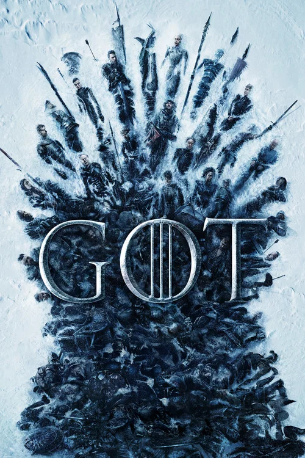
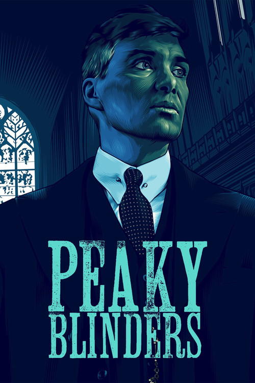
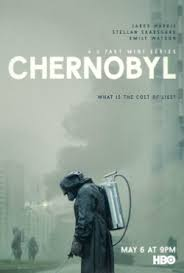
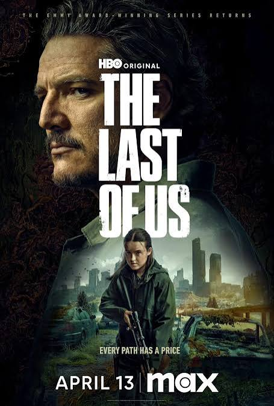
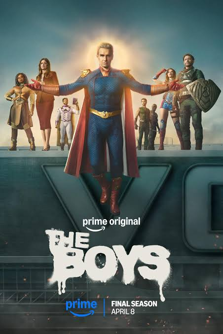
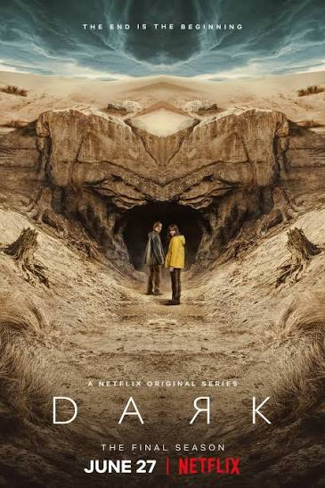
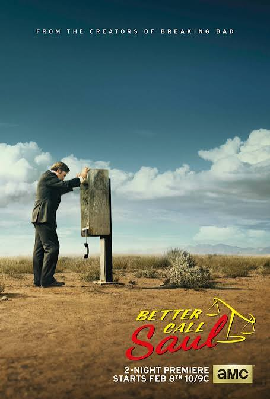
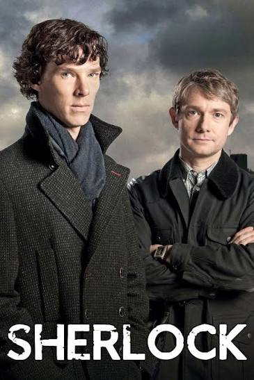

1. Breaking Bad
Storyline
A chemistry teacher diagnosed with inoperable lung cancer turns to manufacturing and selling methamphetamine with a former student.
Seasons & Episodes
Season 1
Episode 1: Pilot - Episode 2: Cat's in the Bag... - Episode 3: ...And the Bag's in the River
Season 2
Episode 1: Seven Thirty-Seven - Episode 2: Grill - Episode 3: Bit by a Dead Bee
Season 3
Episode 1: No Mas - Episode 2: Caballo sin Nombre - Episode 3: I.F.T.

2. Game of Thrones
Storyline
Nine noble families fight for control over the lands of Westeros, while an ancient enemy returns after being dormant for millennia.
Seasons & Episodes
Season 1
Episode 1: Winter Is Coming - Episode 2: The Kingsroad - Episode 3: Lord Snow
Season 2
Episode 1: The North Remembers - Episode 2: The Night Lands - Episode 3: What Is Dead May Never Die
Season 3
Episode 1: Valar Dohaeris - Episode 2: Dark Wings, Dark Words - Episode 3: Walk of Punishment

3. Stranger Things
Storyline
When a young boy vanishes, a small town uncovers a mystery involving secret experiments, terrifying supernatural forces and one strange little girl.
Seasons & Episodes
Season 1
Episode 1: The Vanishing of Will Byers - Episode 2: The Weirdo on Maple Street - Episode 3: Holly, Jolly
Season 2
Episode 1: MADMAX - Episode 2: Trick or Treat, Freak - Episode 3: The Pollywog
Season 3
Episode 1: Suzie, Do You Copy? - Episode 2: The Mall Rats - Episode 3: The Case of the Missing Lifeguard

4. Peaky Blinders
Storyline
A gangster family epic set in 1900s England, centering on a gang who sew razor blades in the peaks of their caps, and their fierce boss Tommy Shelby.
Seasons & Episodes
Season 1
Episode 1 - Episode 2 - Episode 3 - Episode 4 - Episode 5 - Episode 6
Season 2
Episode 1 - Episode 2 - Episode 3 - Episode 4 - Episode 5 - Episode 6
Season 3
Episode 1 - Episode 2 - Episode 3 - Episode 4 - Episode 5 - Episode 6

5. Chernobyl
Storyline
In April 1986, an explosion at the Chernobyl nuclear power plant in the Soviet Union becomes one of the world's worst man-made catastrophes.
Seasons & Episodes
Season 1 (Miniseries)
Episode 1: 1:23:45 - Episode 2: Please Remain Calm - Episode 3: Open Wide, O Earth
Bonus: Behind the Scenes
Part 1: The Tragedy - Part 2: The Aftermath - Part 3: The Trial
Documentary Special
Real Stories of the Liquidators - The Truth Behind Chernobyl

6. The Last of Us
Storyline
After a global pandemic destroys civilization, a hardened survivor takes charge of a 14-year-old girl who may be humanity's last hope.
Seasons & Episodes
Season 1
Episode 1: When You're Lost in the Darkness - Episode 2: Infected - Episode 3: Long, Long Time
Season 2 (Upcoming)
Episode 1 - Episode 2 - Episode 3
Season 3 (Planned)
Episode 1 - Episode 2 - Episode 3

7. The Boys
Storyline
A group of vigilantes set out to take down corrupt superheroes who abuse their superpowers.
Seasons & Episodes
Season 1
Episode 1: The Name of the Game - Episode 2: Cherry - Episode 3: Get Some
Season 2
Episode 1: The Big Ride - Episode 2: Proper Preparation - Episode 3: Over the Hill
Season 3
Episode 1: Payback - Episode 2: The Only Man In The Sky - Episode 3: Barbary Coast

8. Dark
Storyline
A family saga with a supernatural twist, set in a German town where the disappearance of two young children exposes secrets.
Seasons & Episodes
Season 1
Episode 1: Secrets - Episode 2: Lies - Episode 3: Past and Present
Season 2
Episode 1: Beginnings and Endings - Episode 2: Dark Matter - Episode 3: Ghosts
Season 3
Episode 1: Deja-vu - Episode 2: The Survivors - Episode 3: Adam and Eva

9. Better Call Saul
Storyline
The trials and tribulations of criminal lawyer Jimmy McGill in the years leading up to his fateful run-in with Walter White and Jesse Pinkman.
Seasons & Episodes
Season 1
Episode 1: Uno - Episode 2: Mijo - Episode 3: Nacho
Season 2
Episode 1: Switch - Episode 2: Cobbler - Episode 3: Amarillo
Season 3
Episode 1: Mabel - Episode 2: Witness - Episode 3: Sunk Costs

10. Sherlock
Storyline
A modern update finds the famous sleuth and his doctor partner solving crime in 21st century London.
Seasons & Episodes
Season 1
Episode 1: A Study in Pink - Episode 2: The Blind Banker - Episode 3: The Great Game
Season 2
Episode 1: A Scandal in Belgravia - Episode 2: The Hounds of Baskerville - Episode 3: The Reichenbach Fall
Season 3
Episode 1: The Empty Hearse - Episode 2: The Sign of Three - Episode 3: His Last Vow